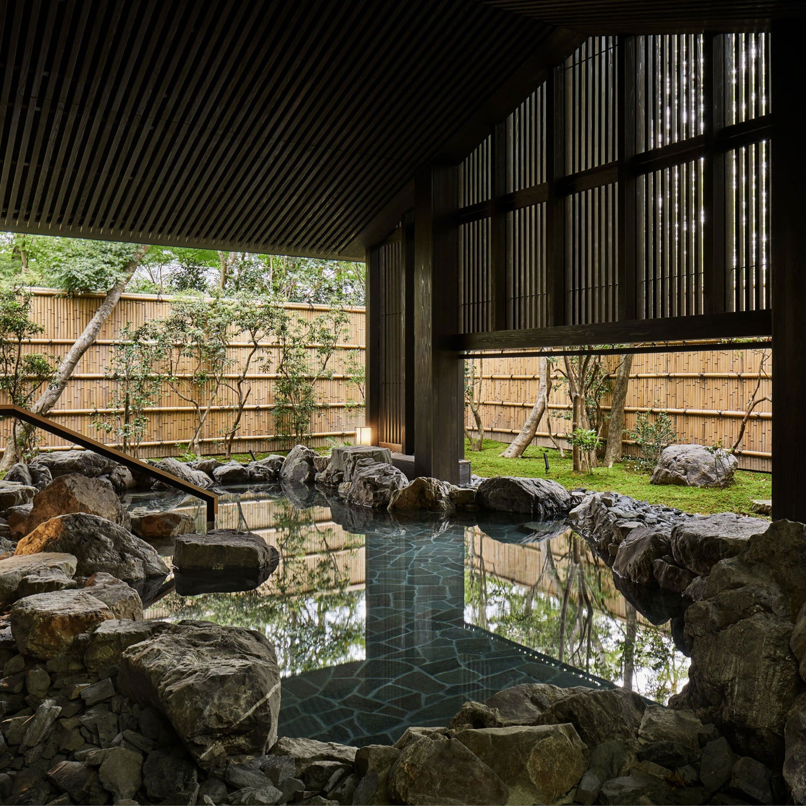

Since inception, Aman's ethos has always been to care for the environments it inhabits, sensitively integrating into the surrounding landscapes, respecting local culture and celebrating its traditions. No place is this better demonstrated than at its three properties in Japan - Aman Tokyo, Aman Kyoto and Amanemu - where the country's natural beauty and exceptional approach to hospitality are expressed meticulously and full-heartedly.
Aman Kyoto
Set in a secret garden at the heart of a forest, Aman Kyoto rests a stone's throw from Kyoto's golden Kinkaku-ji Temple and 16 other Unesco World Heritage Sites. The resort is nonetheless a secluded world apart, with light-filled suites and pavilions set in tranquil glades and its steaming private onsen offering healing in the Aman Spa.
| Name of this Branch | Aman Kyoto, Japan | |
|---|---|---|
| Located in... | Get Directions |
|
 |
 |
 |
| © Aman Amanemu Japans |